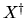
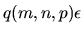

Next: General Linear Model Problem
Up: Linear Equality Constrained Least
Previous: Linear Equality Constrained Least
Contents
Index
Further Details:
Error Bounds for Linear Equality Constrained Least Squares Problems
In this subsection, we will summarize the available error bound.
The reader may also refer to [2,13,18,50] for
further details.
Let  be the solution computed by the driver xGGLSE (see subsection
4.6). It is normwise
stable in a mixed forward/backward sense [18,13].
Specifically,
,
where
solves
,
and
be the solution computed by the driver xGGLSE (see subsection
4.6). It is normwise
stable in a mixed forward/backward sense [18,13].
Specifically,
,
where
solves
,
and
q(m,n,p) is a modestly growing function of m, n, and p.
We take q(m,n,p) = 1 in the code fragment above.
Let 
denote the Moore-Penrose pseudo-inverse of X.
Let
( = CNDAB above) and
( = CNDBA above)
where
and
.
When

is small, the error  is bounded by
is bounded by
When B = 0 and d = 0, we essentially recover error bounds for the
linear least squares (LS) problem:
where
.
Note that
the error in the standard least squares problem provided in section 4.5.1 is
since
.
If one assumes
that
q(m,n) = p(n) = 1, then the bounds are essentially the same.
Next: General Linear Model Problem
Up: Linear Equality Constrained Least
Previous: Linear Equality Constrained Least
Contents
Index
Susan Blackford
1999-10-01